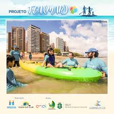

Bazar FAZ
O Bazar FAZ BEM é uma das campanhas mais importantes da Associação Fortaleza Azul para garantir a continuidade dos atendimentos terapêuticos e a manutenção da nossa estrutura. A instituição não recebe recursos públicos e, por isso, a venda dos itens doados no bazar é vital para manter o trabalho em favor das crianças e pessoas no espectro autista.
O Objetivo: Transformar Itens em SuporteOs valores arrecadados no Bazar são inteiramente revertidos para a FAZ, auxiliando na manutenção e ampliação dos projetos de inclusão, apoio jurídico e terapias essenciais que a associação oferece. Os itens são vendidos a preços super acessíveis (alguns entre R$ 5 e R$ 50), permitindo que muitas pessoas colaborem e encontrem peças de qualidade.
O Que Doar?Para que o bazar seja um sucesso e continue sustentando nossos projetos, precisamos de sua ajuda! Aceitamos doações de diversos materiais, desde que estejam em bom estado de conservação:
- Vestuário e Acessórios: Roupas de adultos e infantil, calçados, bolsas e acessórios como brincos e pulseiras.
- Utensílios Domésticos: Itens de utilidade para o dia a dia, utensílios domésticos e objetos de decoração.
- Itens Infantis: Carrinhos de bebê, sapatinhos e brinquedos.
- Qualquer Material: Tecido e outros itens em bom estado.
Se você está fazendo aquela "geral" em casa e não sabe para quem doar, entre em contato com a FAZ! Sua doação é bem-vinda e faz uma diferença real na vida de nossos associados. Para agendar a coleta ou entrega da sua doação, utilize nossos canais de contato.

TEA(mar)
O projeto TEA(mar) é uma iniciativa inovadora da Associação Fortaleza Azul (FAZ), idealizado para ir além dos consultórios e promover bem-estar, qualidade de vida e inclusão esportiva e social para pessoas com Transtorno do Espectro Autista (TEA) e seus familiares.
Stand Up Paddle como TerapiaO coração do TEA(mar) é a prática de Stand Up Paddle (SUP), um esporte aquático que utiliza o mar como um poderoso ambiente terapêutico. As aulas, geralmente quinzenais e gratuitas, são realizadas na Praia do Mucuripe, em Fortaleza. A vivência com o esporte e o ambiente marinho ajuda no processo de inclusão, socialização e desenvolvimento motor e sensorial dos participantes.
Estrutura e SegurançaO projeto é desenvolvido pela FAZ em parceria com entidades como o Ceará SUP Club, e conta com apoio do Governo do Estado do Ceará através da Lei de Incentivo ao Esporte (Sejuv). Cada praticante é acompanhado individualmente por um instrutor educador físico, que recebe treinamento da equipe de psicólogos da associação para garantir a condução e as abordagens terapêuticas necessárias. A presença de um dos pais ou responsável é solicitada, tornando a aula uma experiência de união e suporte familiar.
CineFAZ
O projeto CineFAZ nasceu da vontade da Associação Fortaleza Azul (FAZ) de garantir que as crianças e jovens com autismo pudessem vivenciar a experiência maravilhosa da Sétima Arte em uma sala de cinema. Ir ao cinema pode ser um desafio para o público TEA e suas famílias devido à intensa estimulação sensorial (luzes fortes, som alto e trailers inesperados). O CineFAZ elimina essas barreiras, criando um ambiente seguro e acolhedor.
Sessões Totalmente AdaptadasAs sessões do CineFAZ são realizadas regularmente (acompanhe a divulgação nas redes sociais) e são totalmente gratuitas. Para atender às especificidades sensoriais do público autista, as sessões são adaptadas com características únicas:
- Meia-Luz: A sala de cinema permanece com luz ambiente ou meia-luz durante toda a exibição.
- Som Moderado: O volume do áudio é reduzido e moderado, para evitar desconforto sensorial.
- Sem Trailers: Não há exibição de trailers ou publicidades antes do filme principal.
- Liberdade de Movimento: As crianças podem se levantar, caminhar ou circular pela sala de cinema livremente, sem a pressão de ter que permanecer sentadas.
O projeto é fruto de parcerias importantes com grandes nomes do entretenimento em Fortaleza, como shoppings (ex: RioMar Fortaleza, RioMar Kennedy) e a rede Cinépolis. O objetivo principal do CineFAZ não é apenas o lazer, mas sim preparar as crianças com autismo para, gradualmente, participarem de sessões comuns, promovendo a inclusão social e o direito ao entretenimento para toda a família. A iniciativa demonstra o poder do conhecimento e da ação conjunta para transformar a sociedade.